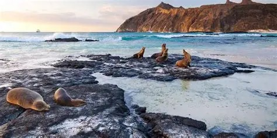
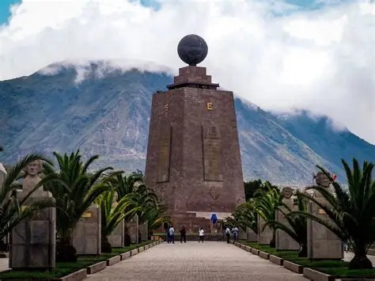
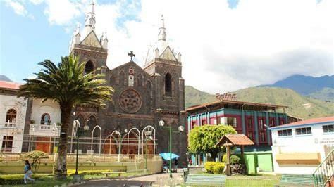

Un país pequeño con cuatro mundos: costa, sierra, Amazonía y Galápagos.

Archipiélago único en el mundo, famoso por su fauna: tortugas gigantes, iguanas marinas y lobos de mar que se pueden observar de cerca.

La capital conserva uno de los centros históricos mejor preservados de América, con iglesias, plazas y calles coloniales.

Ciudad de aventura con cascadas, aguas termales y deportes extremos, rodeada de montañas y vegetación.
Ministerio de Turismo del Ecuador
Ecuador Travel
Envíanos tu consulta por correo